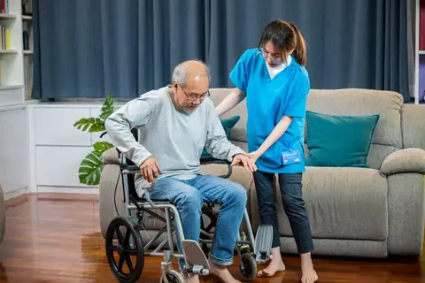

Trusted care for ageing parents
For families living away from their parents. We coordinate medical care, monitoring and support at home, and keep you informed every step of the way.
Everything your parents need, coordinated by one person
Care manager
A trained nurse who is your family's single point of contact.
- Coordinates all medical care and appointments
- Regular health check-ins and monitoring
- Quick responses to questions and concerns
- Accompanies parents to hospital or doctor visits in Bengaluru
Doctor consultations
Access to general physicians and specialists, online or in person.
- Video, phone and in-person consultations
- Follow-up plans after every visit
- Advice for both sudden and long-term health needs
Medicines & diagnostics
Prescriptions, refills and tests handled end to end.
- Medicine refills and reminders
- Lab tests and scans scheduled
- Reports reviewed and explained
- Coordination with pharmacies and diagnostic centres

Home care
Support at home so parents can stay safe and comfortable.
- Nursing and caretaker support
- Physiotherapy and rehabilitation
- Recovery care after hospital stays
- Sample collection at home
Who the Elder Care Programme is for
Children living away
For sons and daughters in other cities or abroad who want regular updates and peace of mind.
Families coordinating care
For families managing doctors, medicines and daily needs across several people and places.
Seniors ageing at home
For parents who want to stay in their own home with steady, reliable support.
Getting started with elder care
Speak with us
Tell us about your parents, their health and what support they need.
Meet the care manager
Your care manager visits, reviews medical history and meets the family.
Agree the care plan
Doctors, medicines, tests and home support are planned together.
Stay updated
Regular check-ins and updates, wherever you live.
Frequently asked questions
Who is the care manager?
A trained nurse assigned to your family. They coordinate doctors, tests, medicines and home care, and keep you updated.
How will I get updates about my parents?
Your care manager shares regular updates by phone, WhatsApp or email, and immediately after any doctor visit or test.
Can you accompany my parents to the hospital?
Yes, within Bengaluru our care manager can accompany parents to hospital and doctor visits.
Can I start with a few services and add more later?
Yes. Start with what your parents need today and add services as their needs change.
What happens in an emergency?
In an emergency, call an ambulance first. Our care manager will help coordinate with the hospital and keep the family informed.
Make sure your parents are well cared for
Tell us about your parents and we'll set up a call with a care manager.
- Registered office
- No. 102, E Block, SLV Karnataka Splendour Apartment, Harinagar Cross, Kothanur, Konanakunte, Bangalore – 560062, Karnataka
- Phone
- +91 97026 50245
- prateeksha@vitaniacare.com